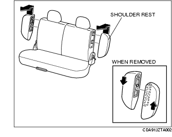

Rear seat operation
Double Fold-down Function
• With the rear seat slid to the rearmost position, the seat backs fold forward using the reclining levers. When the latch is released with the strap, the rear seat can be lifted up.
• The reclining levers can be operated from each side at the rear doors and also from the inside the cargo compartment.
• With the rear seat slid to the rearmost position, the rear seat can be lifted up without having to remove the headrests.

Shoulder rests
• A structure has been adopted whereby the shoulder rests can be removed by sliding them upward.

• The removed left and right shoulder rests can be attached together as one.